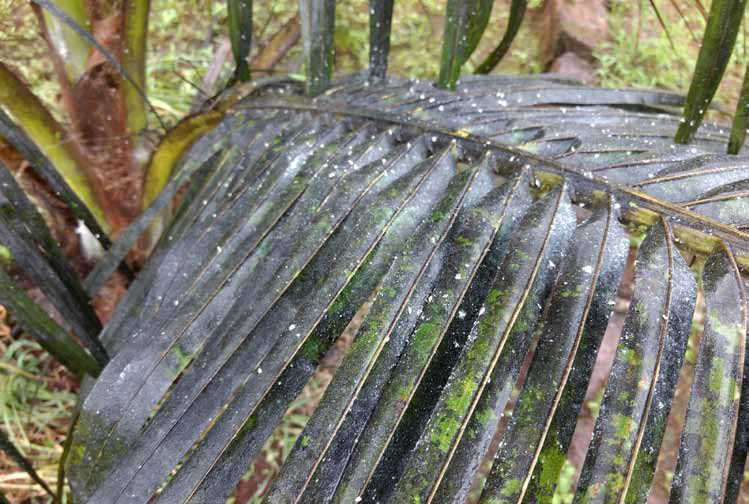
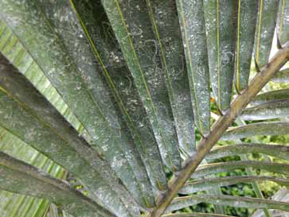
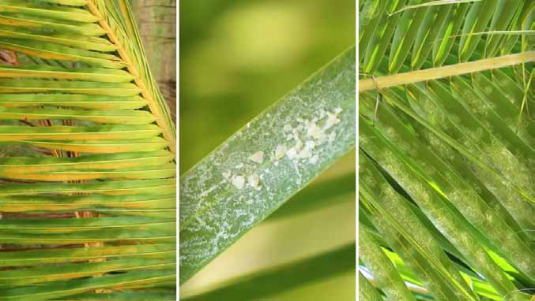

The White Fly Onslaught:
The White Fly Onslaught:
Jaffna Monitor hellojaffnamonitor@gmail.com 15 A coconut leaf in Jaffna, Sri Lanka, heavily infested with whiteflies, showcasing the significant challenge these pests pose to local agriculture. I n recent years, Sri Lanka, especially in its northern regions such as Jaffna, Kilinochchi, Vavuniya and Mullaitivu, where the Tamil majority resides, has been grappling with a significant agricultural threat: the White Fly. Initially targeting mainly coconut palms, this pest has begun to attack various other traditional crops of Sri Lankan Tamils and possesses the potential to harm additional agricultural produce. This development is causing alarm among farmers, with widespread reports of infestations and notably reduced coconut yields. There have been reports of coconuts being sold at exorbitant prices of 120 and 150 rupees in Kilinochchi, a place known for its relatively lower prices, thanks to the abundance in the region. Though minuscule whiteflies pack a devastating punch in the world of agriculture The White Fly Onslaught: Crisis in Sri Lanka's Coconut Plantations Cover Story

Jaffna Monitor hellojaffnamonitor@gmail.com 16 and gardening. Resembling tiny, fluttering snowflakes, these pests are far from benign. They belong to the family Aleyrodidae, and scientists report there are hundreds of species, with the greenhouse whitefly (Trialeurodes vaporariorum) and the silverleaf whitefly (Bemisia tabaci) being particularly notorious. Whiteflies extract plant juices, leading to the weakening of plants. Signs of heavy infestation include yellowing, drying, and premature dropping of leaves. Furthermore, these pests are vectors for crop viruses, exacerbating their impact and can significantly reduce yield. High officials from the Coconut Research Institute note that globally, approximately 1500 species of White Fly exist, with four species particularly threatening to Sri Lanka's coconut palms. These include the Palm-infesting whitefly, Citrus-nesting whitefly, Spiralling whitefly, and Coconut whitefly. The Spiralling whitefly in Sri Lanka dates back to 1990 when it was initially perceived as a minor pest for coconuts compared to other crops. The first significant outbreak in Sri Lanka's coconut plantations occurred in 2019, originating in the Kegalle District. Factors such as illegal importation of Palmae group seedlings, climate change impacts, and a drop in natural predators due to excessive insecticide use on other crops are thought to be contributing causes. These flies have since spread to various districts, exacerbating problems like the Weligama Coconut Leaf Wilt disease. A diverse range of plants, including banana, guava, citrus, avocado, and many more, serve as hosts for the White Fly, underscoring the wide-reaching nature of this issue. Scientists recommend various control measures, including yellow sticky traps and insecticides like Neem oil and soap mixture, Thiomethoxam, Carbosulfan, and a combination of Chlorantraniliprole and Thiomethoxam. The Neem oil and soap mixture is remarkably advised for its lower toxicity to the natural enemies of whiteflies, while artificial insecticides are suggested for newly infested areas and coconut seedling nurseries. In addition to chemical solutions, the search for biological control methods is ongoing. The involvement of international expertise in importing exotic natural enemies of the white fly illustrates the collaborative efforts to curb this pest. Through coordinated efforts encompassing awareness, chemical and biological control, and international cooperation, there is hope to mitigate this crisis and safeguard the livelihoods of farmers and the health of Sri Lanka's agricultural sector. Recently, the Coconut Cultivation Board initiated an experimental effort in Jaffna to control White flies by increasing the population of their natural predators, including certain insects and bees. The results of this experiment are expected to be evident soon. The Board authorities have stated that owners of coconut trees affected

Jaffna Monitor hellojaffnamonitor@gmail.com 17 by the White flies can seek solutions from the Coconut Cultivation Board. It is reported that a division of the Board is operational in each regional agricultural service station, where affected individuals can submit their complaints. However, it is emphasized that the issue of White flies cannot be resolved through individual efforts or by a few farmers alone. The menace of White flies is a collective challenge affecting entire areas. If controlled in one house, the White flies may reappear after a short period from a neighbouring house. Therefore, it is crucial to address this issue through a community-wide collective effort, as the relevant departmental authorities recommended. A few social enthusiasts have highlighted that the Tamil community has already lost a significant number of Mull Murukku (Indian coral tree) trees. In Tamil culture, the Mull Murukku holds a highly auspicious place and is an integral part of weddings, specifically during the 'Kannikaal' ritual. This ritual in Sri Lankan Tamil weddings involves planting a specially prepared stick in the courtyards of both the bride's and groom's homes. However, this species is becoming endangered due to diseases affecting the Mull Murukku and the consequences of urbanization. Botany departments exist in higher education institutions within the Tamil community. Given the irreplaceable role of Mull Murukku in Tamil culture, questions arise as to why experts or scholars in these departments haven't been able to save it. In recent times, some weddings have seen Croton plants and drumstick tree sticks replacing Mull Murukku, leading people concerned about cultural preservation to wonder if an alternative for coconuts might also be necessary in the future. These concerned individuals also emphasize that appropriate, field-specific research is crucial to address the issue of White flies and prevent coconut trees from disappearing like the Mull Murukku. The northern and eastern regions, suitable for dry zone agriculture, currently lack a dedicated coconut research centre. Therefore, it is suggested that a research centre focusing on coconut cultivation, appropriate for these areas, should be established.
